Arduino 项目 · 流水灯与智能预警装置
硬件与实验概述
Arduino R4 WiFi is an open-source main control board with a built-in WiFi module. It delivers strong computing power and great scalability, suitable for IoT, light interaction and other electronic experiments.
Integrated WiFi module, equipped with multiple digital and analog pins for connecting LED lights, sensors and functional modules.
Fully compatible with official and third-party Arduino libraries, featuring great adaptability and low learning threshold.
In this experiment, Arduino R4 WiFi serves as the core hardware matched with external LED modules. We use Arduino IDE to write control code and realize the flowing light effect.
运行流水灯程序
This flowing light experiment uses basic digital pin control and does not require any additional third-party libraries. You can write, compile, and upload the code directly in the Arduino IDE.
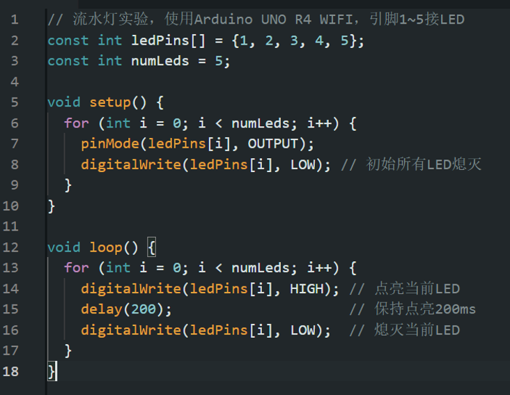
图片 2-1
The array ledPins[] defines the 5 digital pins connected to LEDs, and numLeds stores the total number of LEDs, making it easy to perform batch operations.
A for loop sets all LED pins to OUTPUT mode and initializes them to low level, ensuring all LEDs are off when powered on.
The for loop turns on each LED in sequence, keeps it on for 200ms, then turns it off. This creates a sequential lighting effect from pin 1 to pin 5, forming the "flowing light" effect.
Modify the value inside delay(200) to change the flow speed of the lights. You can also change the pin numbers in the ledPins[] array to adapt to different wiring schemes.
This diagram shows the complete wiring plan for the flowing light experiment:
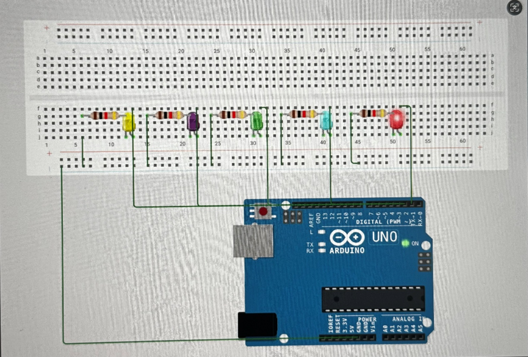
图片 2-2
Arduino UNO main board, breadboard, 5 LED beads, 5 current-limiting resistors.
Follow these steps based on the circuit diagram:
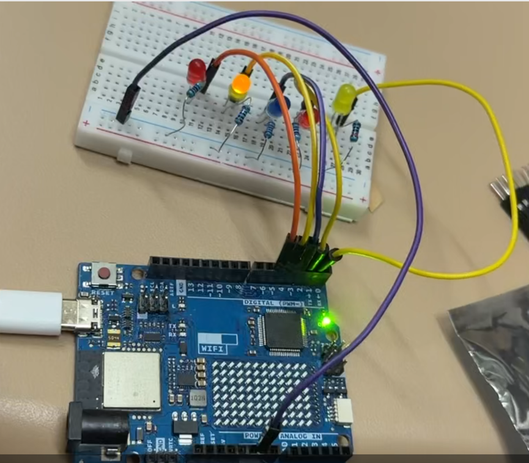
图片 2-3
Flowing LED Light Effect - Video Demo
HC-SR04 | Arduino UNO R4 Wifi
This project adopts an Arduino UNO R4 Wifi board paired with an HC-SR04 ultrasonic sensor to collect real-time distance data. When people with cognitive impairment approach the device and the measured distance reaches the preset threshold, the WS2812 LED ring will activate dynamic rotating light effects to deliver visual warning reminders.
The HC-SR04 is a popular ultrasonic ranging module with integrated transceiver and signal circuits for non-contact distance measurement. It emits 40kHz ultrasonic waves and calculates distance via echo return time, causing no mechanical wear. It uses separate Trig and Echo pins, easy to control with most microcontrollers. Its detection range is 2cm to 400cm with an accuracy of ±3mm. Featuring low power consumption, strong anti-noise ability and a 15° narrow detection angle, it delivers stable performance. Compact, affordable and easy to wire, it fits most civilian and maker projects. Note that it has a short-distance blind zone. Its performance is slightly affected by air conditions and soft sound-absorbing objects, so it is not designed for industrial high-precision measurement.
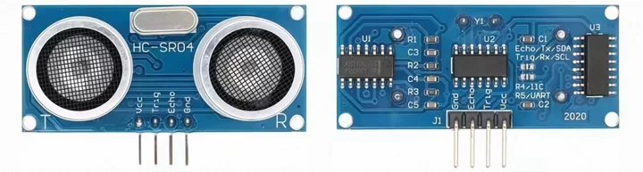
图片 2-4
The Arduino UNO R4 Wifi is an upgraded entry-level controller with integrated Wi-Fi and Bluetooth modules, supporting wireless data transmission and remote alarm functions. It features improved processing performance to steadily drive sensors, LED rings and other peripherals.
It inherits the classic UNO pin design and is fully compatible with common Arduino modules and codes. The board supports USB and external DC power supply, with simple wiring and onboard indicators for convenient debugging. Compact and stable, it is well suited for developing indoor auxiliary warning devices.
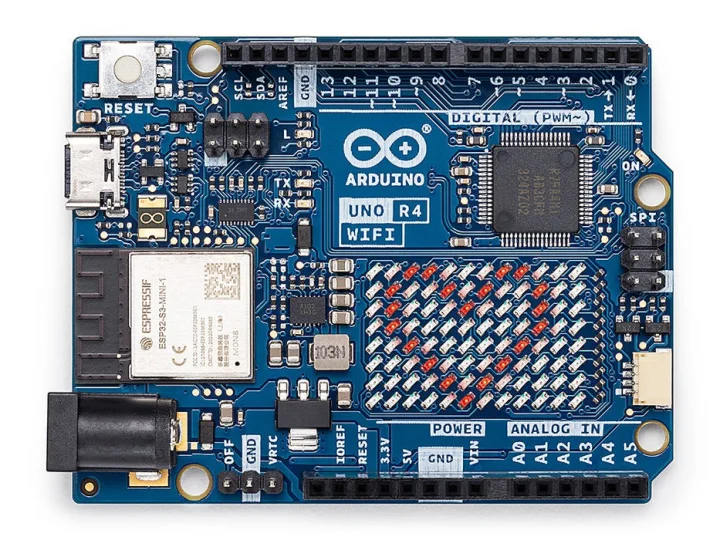
图片 2-5
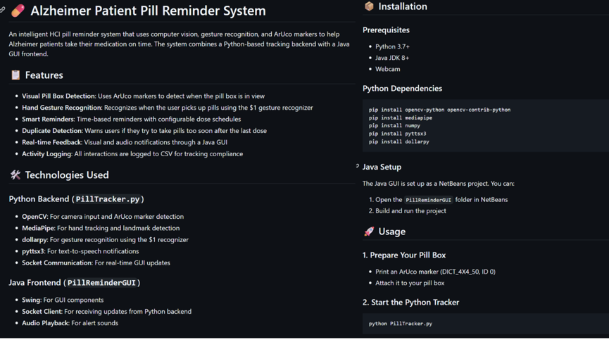
图片 2-6
Arduino UNO R4 Wifi RA4M1 datasheet:
https://docs.arduino.cc/resources/datasheets/ABX00087-datasheet.pdf
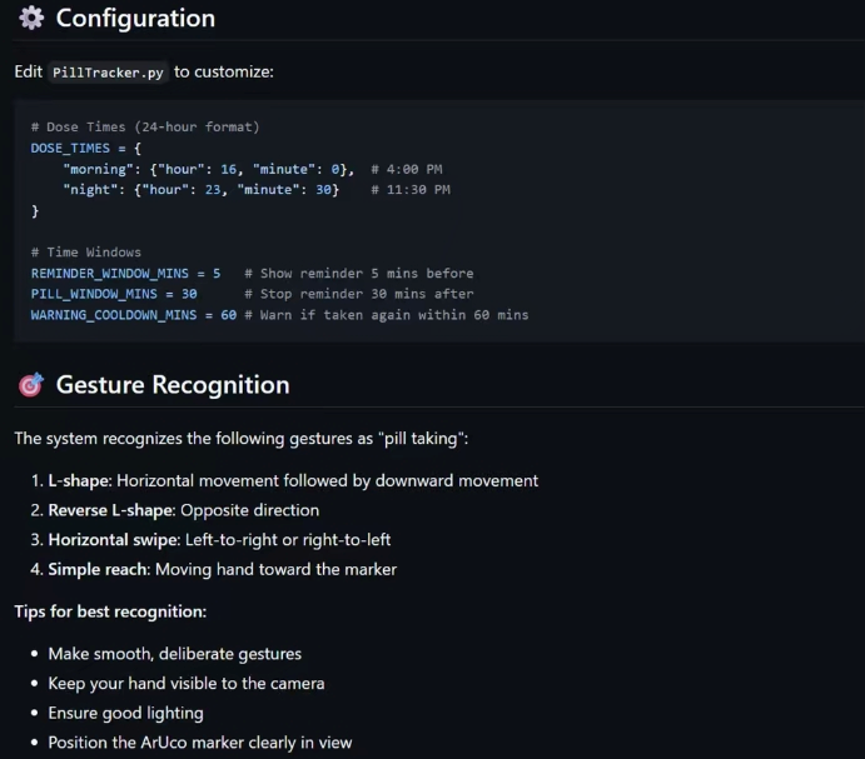
图片 2-7
This smart home sensor is equipped with a 24GHz millimeter-wave radar, which can accurately identify both moving and stationary people. It can be attached to table corners, cabinet edges and other hazardous areas. After connecting to smart lights via the smart home system, it will activate lighting reminders automatically when people approach within the preset range.
It is fixed on-site instead of being worn on the body, so people with cognitive impairment will not resist or forget to use it. The device achieves effective indoor anti-collision protection by triggering lights according to sensing distance.
The millimeter-wave radar has low accuracy in short-distance detection and is vulnerable to external interference. It offers few customizable functions and costs more. Meanwhile, it only supports basic lighting modes without dynamic visual effects.
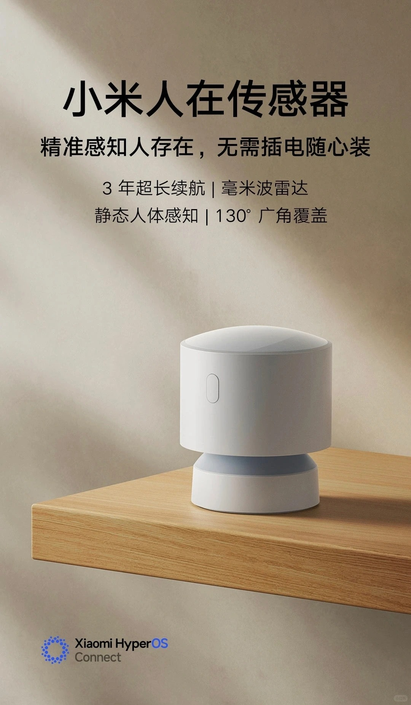
图片 2-8
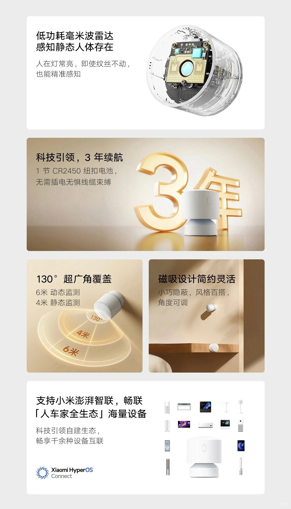
图片 2-9
WAYHOME is a complete care solution for dementia patients and their caregivers. It consists of lightweight GPS wristbands for users and a supporting positioning management system. The system can set virtual safety zones and send remote alarms once users go out of bounds to prevent them from getting lost outdoors.
The design considers the experience of both patients and caregivers. It adopts the logic of distance threshold judgment to realize early risk warning, and the portable wristband will not bring too much visual burden to users.
Patients may take off or refuse to wear the wristband, leading to device failure. Besides, it only sends remote messages to caregivers and cannot provide instant on-site reminders, so it cannot prevent collision injuries immediately when users get close to dangerous objects.
图片 2-10
输入代码 - HC-SR04 + WS2812 LED Ring
#include <Adafruit_NeoPixel.h>
// Ultrasonic sensor pin definition
const int trigPin = 9;
const int echoPin = 10;
long echoTime;
int distance;
const int dangerDistance = 30; // Danger distance threshold (unit: cm)
// WS2812 LED ring configuration
#define LED_PIN 6
#define LED_NUM 12 // Modify according to the actual number of LEDs on your ring
Adafruit_NeoPixel ring(LED_NUM, LED_PIN, NEO_GRB + NEO_KHZ800);
void setup() {
// Initialize ultrasonic sensor
pinMode(trigPin, OUTPUT);
pinMode(echoPin, INPUT);
Serial.begin(9600);
// Initialize LED ring
ring.begin();
ring.clear();
ring.show();
}
void loop() {
// Ultrasonic ranging
digitalWrite(trigPin, LOW);
delayMicroseconds(2);
digitalWrite(trigPin, HIGH);
delayMicroseconds(10);
digitalWrite(trigPin, LOW);
echoTime = pulseIn(echoPin, HIGH);
distance = echoTime * 0.034 / 2;
Serial.print("Current Distance: ");
Serial.print(distance);
Serial.println(" cm");
// Judge whether entering the dangerous area
if (distance < dangerDistance) {
colorRotate(); // Activate colorful rotating warning effect
} else {
ring.clear(); // Turn off the light ring in safe status
ring.show();
}
delay(80);
}
// Color rotating effect function
void colorRotate() {
uint32_t color;
// Traverse each LED to realize rotating effect by color offset
for (int i = 0; i < LED_NUM; i++) {
ring.clear();
// Cycle rainbow colors
color = ring.ColorHSV((i * 65536L / LED_NUM), 255, 255);
ring.setPixelColor(i, color);
ring.setPixelColor((i + 1) % LED_NUM, ring.ColorHSV(((i + 1) * 65536L / LED_NUM), 255, 180));
ring.show();
delay(30); // Smaller value means faster rotation
}
}电路仿真图
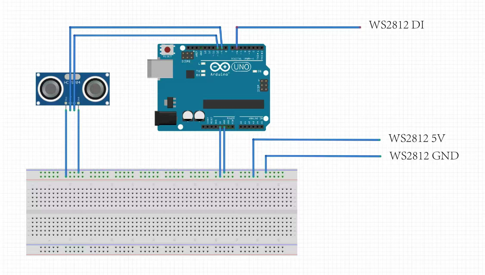
电路仿真示意图
实物设备演示图
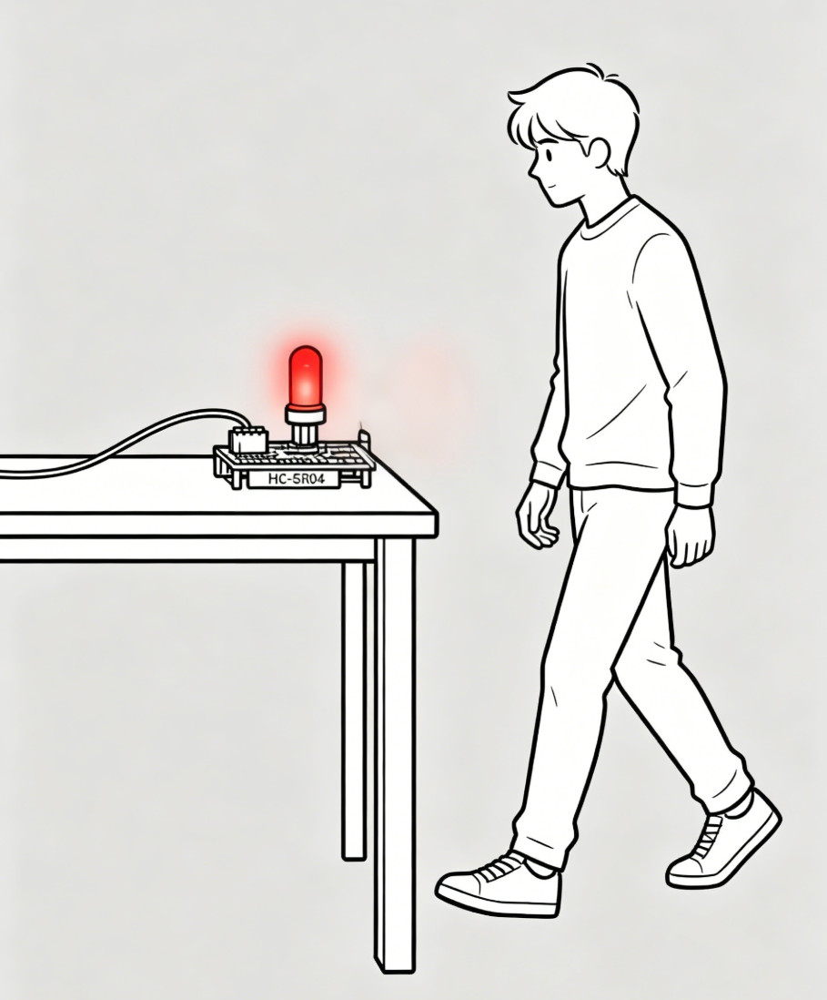
实物设备演示图
输出部分 - WS2812 LED Ring
The WS2812 LED ring is a programmable annular light module with an integrated driver IC. Using single-bus control, each LED supports independent RGB color and brightness adjustment, creating various dynamic light effects.
It uses only one data wire for easy wiring and pin saving, and works perfectly with Arduino boards. Powered by 5V, the module is compact and energy-efficient. When paired with the HC-SR04 sensor, it activates vivid rotating color lights as a visual warning when people get close to hazards.
Easy to mount on table corners and cabinet edges, this affordable module is well suited for building auxiliary warning devices for people with cognitive impairment.
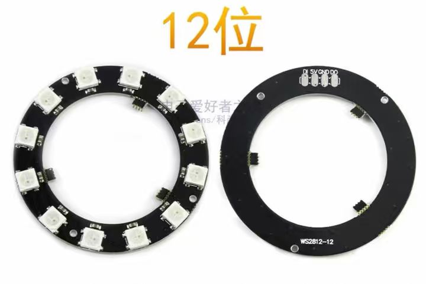
WS2812 LED 环形灯模块